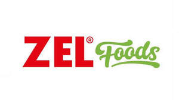

Trade Mark Journal No.2025/027 4 July 2025
UK00004223299 23 June 2025 (29,30,32,35,43)

- Class 29
- Meat, fish, poultry and game; processed meat products; dried pulses; soups, bouillon; processed olives, olive paste; milks of animal origin; milks of herbal origin; milk products; butter; edible oils; dried, preserved, frozen, cooked, smoked or salted fruits and vegetables; tomato paste; prepared nuts and dried fruits as snacks; hazelnut spreads and peanut butter; tahini (sesame seed paste); eggs and powdered eggs; potato chips; Meat-based snack foods; Vegetable-based snack foods; Soy-based snack foods; Potato-based snack foods; Cheese-based snack foods; Nut-based snack foods; Potato snack foods; Foods prepared from fish; Fruit based snack foods; Fermented vegetable foods [kimchi]; Sweet corn-based snack foods; Snack foods based on vegetables; Vegetable fats for food; Foods made from fish; Snack foods based on legumes; Meat-based snack food; Oils and fats for food; Vegetable-based snack food; Oils for food; Algae prepared for human foods; Snack food (Fruit-based -); Fruit-based snack food; Tofu-based snack food; Fish-based snack food; Casseroles [food]; Animal fats for food; Potato crisps in the form of snack foods; Vegetable oils for food; Hydrogenated oils for food; Edible oils for use in cooking foodstuffs; Snack foods based on nuts; Jellies for food.
- Class 30
- Coffee, cocoa; coffee or cocoa based beverages, chocolate based beverages; pasta, stuffed dumplings, noodles; pastries and bakery products based on flour; desserts based on flour and chocolate; bread, simit [turkish ring-shaped bagel covered with sesame seeds], poğaça [turkish bagel], pita, sandwiches, katmer [turkish pastry], pies, cakes, baklava [turkish dessert based on dough coated with syrup], kadayı [turkish dessert based on dough]; desserts based on dough coated with syrup; puddings, custard, kazandibi [turkish pudding], rice pudding, keşkül [turkish pudding]; honey, bee glue for human consumption, propolis for food purposes; condiments for foodstuff, vanilla (flavoring), spices, sauces (condiments), tomato sauce; yeast, baking powder; flour, semolina, starch for food; sugar, cube sugar, powdered sugar; tea, iced tea; confectionery, chocolate, biscuits, crackers, wafers; chewing gums; ice-cream, edible ices; salt; cereal-based snack food, popcorn, crushed oats, corn chips, breakfast cereals, processed wheat for human consumption, crushed barley for human consumption, processed oats for human consumption, processed rye for human consumption, rice; molasses for food; Grain-based snack foods; Flavourings for foods; Farinaceous foods; Foods (Farinaceous -); Oat-based foods; Wheat-based snack foods; Rice-based snack foods; Corn-based snack foods; Processed seeds used as a flavoring for foods and beverages; Canned pasta foods; Snack foods prepared from maize; Snack foods made from cereals; Multigrain-based snack foods; Flavourings for snack foods [other than essential oils]; Cereal breakfast foods; Cereal based snack foods; Snack foods made of wheat; Snack foods made from wheat; Natural starches for food; Cereal snack foods flavoured with cheese; Dried pasta foods; Cereal based prepared snack foods; Snack foods made from corn; Foods produced from baked cereals; Snack foods prepared from potato flour; Snack food (Cereal-based -); Cereal-based snack food; Fructose syrup for use in the manufacture of foods; Starch products for food; Food seasonings; Snack food products made from cereals; Fructose for food; Flavourings of lemons for food or beverages; Flavourings of almond for food or beverages; Snack foods made of whole wheat; Rice-based snack food; Snack food (Rice-based -); Food flavourings; Snack foods consisting principally of pasta; Glucose syrup for use in the manufacture of foods; Snack foods consisting principally of grain; Snack food products made from cereal starch; Oat-based food; Snack foods consisting principally of rice; Chocolate food beverages not being dairy-based or vegetable based; Snack food products consisting of cereal products; Snack foods consisting principally of bread; Chocolate-based ready-to-eat food bars; Starch for food; Snack food products made from rice; Flavourings of lemons, other than essential oils, for food or beverages; Flavourings of tea for food or beverages; Processed cereals for food for human consumption; Flavourings of almond, other than essential oils, for food or beverages.
- Class 32
- Beers; extracts of hops for making beer; mineral water, spring water, table water, soda water; fruit and vegetable juices, fruit and vegetable concentrates and extracts for making beverages, non-alcoholic soft drinks; energy drinks; protein-enriched sports beverages.
- Class 35
- Providing consumer product information relating to food or drink products.
- Class 43
- Preparation of food and beverages.
ZEL PROPERTY LTD